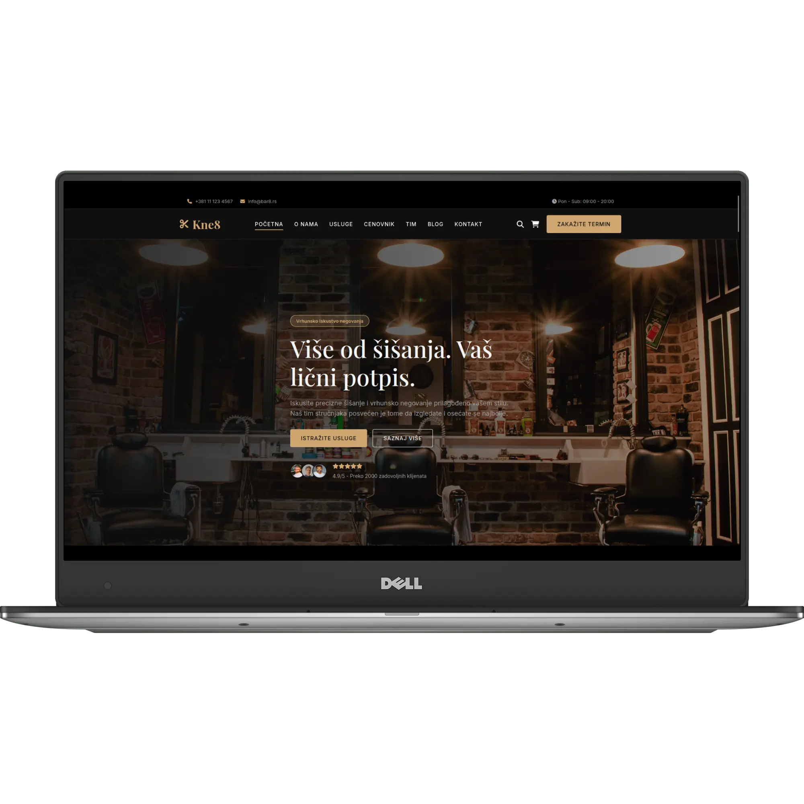
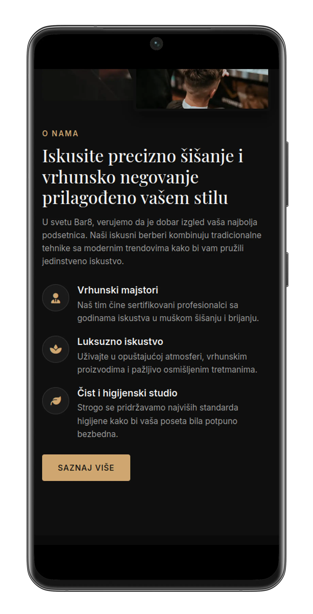

Bar8 — koncept sajta za berberski studio

01 / Kontekst
Berberski studio Bar8 je zamišljeni lokalni brend osmišljen za potrebe ovog koncepta — studio koji nudi vrhunsko šišanje, brijanje i negu lica. Ideja je bila da prikažem kako bi izgledalo digitalno prisustvo brenda čije su usluge na zavidnom nivou, ali čiji sajt to ne prati. Cilj je bio stvoriti jednostrani sajt koji prenosi atmosferu studija, jasno komunicira premium usluge i olakšava zakazivanje termina — kao primer kako bi to izgledalo u stvarnom poslovanju.
02 / Izazov
Tipičan berberski sajt često pati od nekoliko problema:
- Zastareo vizuelni identitet: Sajtovi deluju generički i ne odražavaju "premium" iskustvo koje salon nudi.
- Otežano zakazivanje: Nedostatak jasne forme ili sistema za zakazivanje tera klijente da zovu ili dolaze lično.
- Nepreglednost na mobilnim uređajima: Većina klijenata pretražuje usluge preko telefona, a stari sajtovi se ne prilagođavaju.
- Nedostatak društvenih dokaza: Utisci i galerija radova nisu bili istaknuti, što je ključno za poverenje u ovoj niši.
03 / Pristup
Fokus je bio na stvaranju muževnog, elegantnog i funkcionalnog digitalnog iskustva:
Tamna tema i tipografija:
Duboka tamna pozadina sa čistim, geometrijskim sans-serif fontom (Satoshi) stvara osećaj luksuza i preciznosti.
One-page struktura:
Korisnik se vodi kroz logičan put: predstavljanje → usluge → cenovnik → galerija → utisci → zakazivanje. Sve na jednom mestu.
Jasni CTA (Pozivi na akciju):
Dugmad "Zakaži" postavljena su uz svaku uslugu i paket, čime se smanjuje trenje i podstiče konverzija.
Vizuelni fokus na detalje:
Galerija radova i sekcija sa utiscima klijenata istaknute su kako bi se odmah izgradilo poverenje.
04 / Šta je uključeno
- One-page dizajn: Sve bitne informacije na jednom mestu, bez zbunjujuće navigacije.
- Responzivnost (Mobile-first): Sajt se savršeno prilagođava telefonima, tabletima i desktop računarima.
- Funkcionalna forma za zakazivanje: Jasna kontakt forma sa validacijom, koja omogućava klijentima da brzo rezervišu termin.
- Sekcija sa cenovnikom: Transparentan prikaz paketa usluga, što povećava poverenje.
- Galerija radova: Vizuelni dokaz kvaliteta usluge.
- Društveni dokazi:Društveni dokaz koji dodatno učvršćuje brend.
05 / Rezultat
Rezultat je brz, elegantan i funkcionalan sajt koji verno prenosi atmosferu Bar8 studija. Klijenti sada mogu jednostavno da se upoznaju sa uslugama, pogledaju radove i zakažu termin u nekoliko klikova. Sajt je u potpunosti responzivan i optimizovan za brzinu, što ga čini idealnim digitalnim izlogom za jedan premium berberski brend.

